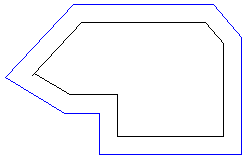
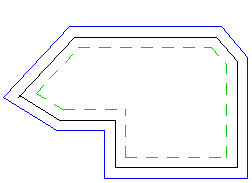
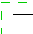
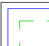
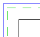
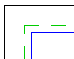
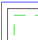
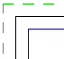

")
Folienbelegung: Wenn AutFol aktiviert ist (untere Menüleiste), werden die Elemente in Folie 0 abgelegt.
Erzeugen von Wänden aus oder entlang einer vorhandenen Bezugslinie. Wandlinien-Schnittpunkte, z. B. bei umlaufenden Wänden, werden automatisch erzeugt.
Beispiel:
 |
 |
Bezugslinie Γ ; 1. Wandlinie Γ ; 2. Wandlinie Γ |
|
So wird's gemacht:
§Geben Sie unter Dicke den Abstand der Parallelen zur Bezugslinie ein und bestätigen Sie mit der Eingabetaste.
Sie können sowohl positive als auch negative Werte eingeben.
Wenn mehrere Parallelen gezeichnet werden sollen, trennen Sie die Abstände jeweils mit einem Leerzeichen.
Beispiel: Mehrere Abstände Abstandsangabe: .2_.35_.39. Beachten Sie, dass die aufeinanderfolgenden Zwischenräume sich immer direkt auf den zuletzt angegebenen Abstand beziehen. Der Abstand der ersten Parallelen zur Bezugslinie beträgt demnach 0.2 m. Der Abstand der zweiten Parallelen zur ersten Parallelen beträgt 0.35 m und der Abstand der dritten Parallelen zur zweiten Parallelen beträgt 0.39 m. |
§Wählen Sie nacheinander für jede Wandlinie einen Linientyp aus der Drop-Down-Liste mit Linksklick. [Linientyp 1. Linie]; [Linientyp 2. Linie].
Mit Rechtsklick können Sie den Linientyp aus der vorhergehenden Auswahl nacheinander für jede Wandlinie übernehmen. Gilt auch für die Übernahme der Stiftnummer.
§Wählen Sie nacheinander für jede Wandlinie eine Stiftnummer aus der Drop-Down-Liste mit Linksklick. [Stiftnummer 1. Linie]; [Stiftnummer 2. Linie].
§Klicken Sie die Elemente der Bezugslinie in aufeinanderfolgender Reihe an. Erkannte Linienelemente werden durch ein Kreuz markiert. [Welche Linien 0 Punkte gefunden].
Die Lage der zu erzeugenden Wandlinie wird durch die Reihenfolge bei der Auswahl der Linienelemente bestimmt (im oder gegen Uhrzeigersinn).
Beispiel: Lage der Wandlinien |
||
Abstandsangabe |
im Uhrzeigersinn |
gegen den Uhrzeigersinn |
.2 .35 |
 |
 |
.4 -.1 |
 |
 |
.24 -.5 |
 |
 |
Bezugslinie Γ ; 1. Wandlinie Γ ; 2. Wandlinie Γ |
||
§Verwenden Sie ggf. die Optionen im Funktionsbereich, um die Auswahl zu ändern.
[Punkte hinzufügen]: Standardeinstellung; fügt der Auswahl weitere Zeichenelemente hinzu. |
|
[Punkte entfernen]: Markierung eines Zeichenelementes durch Anklicken des Markierungskreuzes entfernen. |
|
[Alle Punkte entfernen]: Hebt die Auswahl der Zeichenelemente auf. Markierungen werden entfernt, ISBCAD wechselt automatisch zur Funktion [Punkte hinzufügen]. |
§Bestätigen Sie die Auswahl der Linienelemente mit Rechtsklick.
Die Wandlinie wird mit den angegebenen Parametern (Abstand, Linientyp, Stiftnummer) gezeichnet.
Siehe auch: